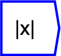

Next: floor
Up: Functions/Unary Operators
Previous: tanh
Contents

absolute value function. Returns the magnitude
of any entered variable.
The operator can be placed on the canvas in two ways:
- From the Functions (``function'') toolbar; or
- By typing the letters ``abs'' on the canvas and then pressing the
Enter key.